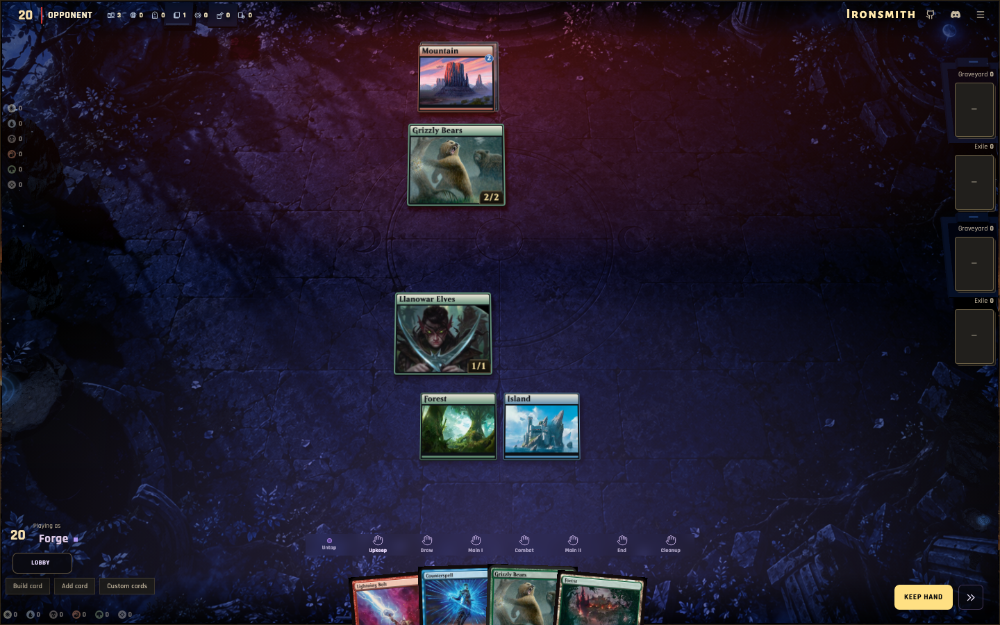

One arena, across screens
Desktop styling carried into tablet and phone layouts. Screenshots use the same local game fixture.
Tablet · 834 × 1112
Floating toolbar, bottom identity and action controls, and an uninterrupted battlefield. The hand remains at the bottom.
Landscape phone · 844 × 390
A horizontal phase dock with reserved space, a bottom-right action button, and desktop-style player labels. Compact lanes, touch interactions and the full-screen hand stay available.
Portrait phone · 390 × 844
The existing rotation prompt gains the desktop palette, clearer type and a larger gold action button.
Desktop reference · 1440 × 900
